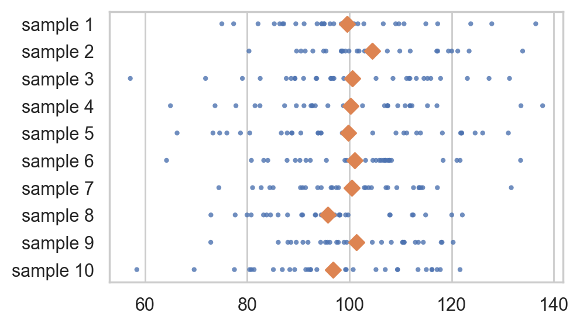

Python coding skills for statistics Part 2#
This Juppyter notebook contains the code examples form the blog post Python coding skills for statistics Part 2.
I’ve intentionally left empty code cells throughout the notebook, which you can use to try some Python commands on your own. For example, you can copy-paste some of the commands in previous cells, modify them and run to see what happens. Try to break things.
To run a code cell, press the play button in the menu bar, or use the keyboard shortcut SHIFT+ENTER.
Notebook setup#
# %pip install ministats
# Figures setup
import matplotlib.pyplot as plt
import seaborn as sns
plt.clf() # needed otherwise `sns.set_theme` doesn't work
sns.set_theme(
style="whitegrid",
rc={'figure.figsize': (5, 3)},
)
# High-resolution figures please
%config InlineBackend.figure_format = 'retina'
def savefig(fig, filename):
fig.tight_layout()
fig.savefig(filename, dpi=300, bbox_inches="tight", pad_inches=0)
<Figure size 640x480 with 0 Axes>
Introduction#
Context#
Example dataset: IQ scores#
Consider the following dataset, which consists of IQ scores of students who took a smart drug.
iqs = [ 95.7, 100.1, 95.3, 100.7, 123.5, 119.4, 84.4, 109.6,
108.7, 84.7, 111.0, 92.1, 138.4, 105.2, 97.5, 115.9,
104.4, 105.6, 104.8, 110.8, 93.8, 106.6, 71.3, 130.6,
125.7, 130.2, 101.2, 109.0, 103.8, 96.7]
len(iqs)
30
Descriptive statistics#
import seaborn as sns
sns.histplot(iqs, bins=range(50,150,5));
savefig(plt.gcf(), "figures/histplot_iqs.png")
---------------------------------------------------------------------------
FileNotFoundError Traceback (most recent call last)
Cell In[5], line 4
1 import seaborn as sns
2 sns.histplot(iqs, bins=range(50,150,5));
----> 4 savefig(plt.gcf(), "figures/histplot_iqs.png")
Cell In[2], line 15, in savefig(fig, filename)
13 def savefig(fig, filename):
14 fig.tight_layout()
---> 15 fig.savefig(filename, dpi=300, bbox_inches="tight", pad_inches=0)
File /opt/hostedtoolcache/Python/3.10.16/x64/lib/python3.10/site-packages/matplotlib/figure.py:3490, in Figure.savefig(self, fname, transparent, **kwargs)
3488 for ax in self.axes:
3489 _recursively_make_axes_transparent(stack, ax)
-> 3490 self.canvas.print_figure(fname, **kwargs)
File /opt/hostedtoolcache/Python/3.10.16/x64/lib/python3.10/site-packages/matplotlib/backend_bases.py:2184, in FigureCanvasBase.print_figure(self, filename, dpi, facecolor, edgecolor, orientation, format, bbox_inches, pad_inches, bbox_extra_artists, backend, **kwargs)
2180 try:
2181 # _get_renderer may change the figure dpi (as vector formats
2182 # force the figure dpi to 72), so we need to set it again here.
2183 with cbook._setattr_cm(self.figure, dpi=dpi):
-> 2184 result = print_method(
2185 filename,
2186 facecolor=facecolor,
2187 edgecolor=edgecolor,
2188 orientation=orientation,
2189 bbox_inches_restore=_bbox_inches_restore,
2190 **kwargs)
2191 finally:
2192 if bbox_inches and restore_bbox:
File /opt/hostedtoolcache/Python/3.10.16/x64/lib/python3.10/site-packages/matplotlib/backend_bases.py:2040, in FigureCanvasBase._switch_canvas_and_return_print_method.<locals>.<lambda>(*args, **kwargs)
2036 optional_kws = { # Passed by print_figure for other renderers.
2037 "dpi", "facecolor", "edgecolor", "orientation",
2038 "bbox_inches_restore"}
2039 skip = optional_kws - {*inspect.signature(meth).parameters}
-> 2040 print_method = functools.wraps(meth)(lambda *args, **kwargs: meth(
2041 *args, **{k: v for k, v in kwargs.items() if k not in skip}))
2042 else: # Let third-parties do as they see fit.
2043 print_method = meth
File /opt/hostedtoolcache/Python/3.10.16/x64/lib/python3.10/site-packages/matplotlib/backends/backend_agg.py:481, in FigureCanvasAgg.print_png(self, filename_or_obj, metadata, pil_kwargs)
434 def print_png(self, filename_or_obj, *, metadata=None, pil_kwargs=None):
435 """
436 Write the figure to a PNG file.
437
(...)
479 *metadata*, including the default 'Software' key.
480 """
--> 481 self._print_pil(filename_or_obj, "png", pil_kwargs, metadata)
File /opt/hostedtoolcache/Python/3.10.16/x64/lib/python3.10/site-packages/matplotlib/backends/backend_agg.py:430, in FigureCanvasAgg._print_pil(self, filename_or_obj, fmt, pil_kwargs, metadata)
425 """
426 Draw the canvas, then save it using `.image.imsave` (to which
427 *pil_kwargs* and *metadata* are forwarded).
428 """
429 FigureCanvasAgg.draw(self)
--> 430 mpl.image.imsave(
431 filename_or_obj, self.buffer_rgba(), format=fmt, origin="upper",
432 dpi=self.figure.dpi, metadata=metadata, pil_kwargs=pil_kwargs)
File /opt/hostedtoolcache/Python/3.10.16/x64/lib/python3.10/site-packages/matplotlib/image.py:1634, in imsave(fname, arr, vmin, vmax, cmap, format, origin, dpi, metadata, pil_kwargs)
1632 pil_kwargs.setdefault("format", format)
1633 pil_kwargs.setdefault("dpi", (dpi, dpi))
-> 1634 image.save(fname, **pil_kwargs)
File /opt/hostedtoolcache/Python/3.10.16/x64/lib/python3.10/site-packages/PIL/Image.py:2591, in Image.save(self, fp, format, **params)
2589 fp = builtins.open(filename, "r+b")
2590 else:
-> 2591 fp = builtins.open(filename, "w+b")
2592 else:
2593 fp = cast(IO[bytes], fp)
FileNotFoundError: [Errno 2] No such file or directory: 'figures/histplot_iqs.png'

from statistics import mean
mean(iqs)
105.89
from statistics import stdev as std
std(iqs)
14.658229417469641
Statistical inference by eyeball#
Move the sliders to choose the model parameters that best match the data.
import numpy as np
from scipy.stats import norm
from ipywidgets import interact
def plot_pop_and_sample(mu, sigma):
# 1. Plot histogram of sample
ax = sns.histplot(x=iqs, stat="density", bins=range(50,150,5), label="data")
# 2. Plot probability density function of population model
rvX = norm(mu, sigma)
xs = np.linspace(50, 150, 1000)
fXs = rvX.pdf(xs)
sns.lineplot(x=xs, y=fXs, ax=ax, c="C0", label="model")
print(f"current population model guess: X ~ N(mu={mu}, sigma={sigma})")
interact(plot_pop_and_sample, mu=(50,150,1), sigma=(3,40,1));
Understanding probability distributions#
A random variable …
described by
Building computer models for probability distributions#
The standard normal distribution is denoted \(Z \sim \mathcal{N}(\mu=0,\sigma=1)\), where \(Z\) is the name has the probability density function:
The standard normal is a special case of the general normal \(\mathcal{N}(\mu, \sigma)\) where \(\mu\) is the mean and \(\sigma\) is the standard deviation.
We can use one of the pre-defined probability model families in the SciPy library.
To create a computer model for the standard normal random variable \(Z \sim \mathcal{N}(\mu=0, \sigma=1)\),
we need to “import” the norm model family form scipy.stats then call norm(0,1)
to initialize the model with parameters \(\mu=0\) and \(\sigma=1\).
from scipy.stats import norm
rvZ = norm(loc=0, scale=1)
# rvZ
The probability density function \(f_Z\) is available as the .pdf method on the model rvZ.
rvZ.pdf(1)
0.24197072451914337
Probability model visualizations#
import numpy as np
zs = np.linspace(-4, 4)
fZs = rvZ.pdf(zs)
sns.lineplot(x=zs, y=fZs)
# FIGURES ONLY
ax = sns.lineplot(x=zs, y=fZs, color="b")
ax.set_xlabel("$z$")
ax.set_ylabel("$f_Z$")
savefig(ax.figure, "figures/pdf_of_rvZ.png")
{kind=link}
The above graph tells you everything you need to know about the random variable \(Z\). The possible values of \(Z\) are concentrated around the mean \(\mu=0\). The region of highest density is roughly between \(z=-1\) and \(z=1\), with most of values between \(z=-2\) and \(z=2\), then the probability densities drops off to form long tails.
The above graph shows the “shape” of the normal distribution \(\mathcal{N}(\mu=0, \sigma=1)\), which is just one representative of the general normal distribution. Here some examples of graphs of the normal distribution for choices of the parameters \(\mu\) and \(\sigma\) to give you an idea of what they do.

There are dozens of other probability distributions that can be useful for modelling
You can take a look at the probability distirbution graphs here
TODO links to other panels of pdfs
Doing probability calculations#
Calculating probabilities with the continuous random variable \(Z\) requires using integration, which the process of computing the total are under a curve for some region. For example, the probability that the random variable \(Z\) will have a value somewhere between \(a\) and \(b\) is defined as \(\textrm{Pr}(\{a \leq Z \leq b\}) = \int_{z=a}^{z=b} f_Z(z) dz\).
In words …
from scipy.integrate import quad
quad(rvZ.pdf, a=1, b=2)[0]
0.13590512198327787
# FIGURES ONLY
zs = np.linspace(-4, 4, 1000)
fZs = rvZ.pdf(zs)
ax = sns.lineplot(x=zs, y=fZs)
mask = (1 < zs) & (zs < 2)
ax.fill_between(zs[mask], y1=fZs[mask], alpha=0.6, facecolor="C3")
savefig(ax.figure, "figures/pdf_of_rvZ_highlight_1_to_2.png")
{kind=link}
Random samples#
np.random.seed(46)
n = 10
zs = rvZ.rvs(n)
list(zs.round(3))
[0.585, 1.231, 0.822, -0.799, 0.412, -0.176, -0.073, -0.566, -0.093, 0.857]
sns.stripplot(x=zs);
{kind=link}
with plt.rc_context({"figure.figsize":(6,1.3)}):
sns.stripplot(x=zs);
savefig(plt.gcf(), "figures/sample_from_rvZ_n10.png")
{kind=link}
Understanding sampling distributions#
Probability model for the general population#
mu = 100
sigma = 15
rvX = norm(mu, sigma)
xs = np.linspace(30, 170)
sns.lineplot(x=xs, y=rvX.pdf(xs));
savefig(plt.gcf(), "figures/samples_from_rvX_n30.png")
{kind=link}
# # FIGURES ONLY
# xs = np.linspace(30, 170)
# ax = sns.lineplot(x=xs, y=rvX.pdf(xs));
# ax.set_xlabel("$x$")
# ax.set_ylabel("$f_{X}$");
# savefig(plt.gcf(), "figures/pdf_plot_of_N10015.png")
Random samples from the population#
The sampling distribution of the mean for samples of size \(n=30\) from the distribution \(X^0 \sim \mathcal{N}(100,15)\) is denoted \(\overline{\mathbf{X}^0} = \mathbf{Mean}(\mathbf{Z})\), where \(\mathbf{Z} = (Z_1, Z_2, \ldots, Z_{20})\) is a random sample.
The random variable \(\overline{\mathbf{Z}}\) describes the kind of means we can expect to observe if we compute the mean for a sample of size \(n=20\) from the standard normal.
Let’s generate \(N=10\) samples \(\mathbf{z}_1, \mathbf{z}_2, \mathbf{z}_3, \ldots, \mathbf{z}_{10}\) of size \(n=20\) from \(Z \sim \mathcal{N}(0,1)\), and compute the mean in each sample.
from ministats import gen_samples, plot_samples
np.random.seed(5)
xsamples = gen_samples(rvX, n=30, N=10)
plot_samples(xsamples);
WARNING (pytensor.tensor.blas): Using NumPy C-API based implementation for BLAS functions.
{kind=link}

# # FIGURES ONLY
# with plt.rc_context({"figure.figsize":(8,2.8)}):
# np.random.seed(45)
# x0samples = gen_samples(rvX, n=30, N=10)
# plot_samples(xsamples)
# savefig(plt.gcf(), "figures/samples_from_rvX_n30.png")
The diamond markers indicate the position of the sample means computed from each sample: \([\overline{\mathbf{z}}_1, \overline{\mathbf{z}}_2, \overline{\mathbf{z}}_3, \ldots, \overline{\mathbf{z}}_{10}]\).
Now imagine we generate 9990 more samples to obtain a total of \(N=10000\) samples from the population model:
\(\mathbf{z}_1, \mathbf{z}_2, \mathbf{z}_3, \ldots, \mathbf{z}_{1000}\).
We can visualize the sampling distribution of the mean \(\overline{\mathbf{Z}} = \texttt{mean}(\mathbf{Z})\)
by plotting a histogram of the means computed from the \(10000\) random samples,
zbars = \([\overline{\mathbf{z}}_1, \overline{\mathbf{z}}_2, \overline{\mathbf{z}}_3, \ldots, \overline{\mathbf{z}}_{1000}]\),
where \(\overline{\mathbf{z}}_j\) denotes the sample mean computed from the data in the \(j\)th sample,
\(\overline{\mathbf{z}}_j = \texttt{mean}(\mathbf{z}_j)\).
N = 1000
n = 30
xbars = []
for i in range(0, N):
sample = rvX.rvs(n)
xbar = mean(sample)
xbars.append(xbar)
# xbars[0:5]
ax = sns.histplot(xbars, color="C1", stat="density")
sns.scatterplot(x=xbars, y=-0.01, color="C1", marker="D", alpha=0.1, ax=ax)
ax.set_xlabel("$\\overline{\\mathbf{x}}$")
ax.set_ylabel("$f_{\\overline{\\mathbf{X}}}$");
{kind=link}
# FIGURES ONLY
ax = sns.histplot(xbars, color="C1", stat="density")
sns.scatterplot(x=xbars, y=-0.01, color="C1", marker="D", alpha=0.1, ax=ax)
ax.set_ylabel("$f_{\\overline{\\mathbf{X}}}$")
savefig(plt.gcf(), "figures/hist_sampling_dist_mean_rvX_n30_N1000.png")
{kind=link}
The above figure shows the sampling distribution of the mean for samples of size \(n=20\) from the standard normal. The histogram shows the “density of diamond shapes,” and provides a representation of the sampling distribution of the mean \(\overline{\mathbf{Z}} = \tt{mean}(\mathbf{Z})\).
Central limit theorem#
from ministats import plot_samples_panel
plot_samples_panel(rvX, xlims=[60,140])
savefig(plt.gcf(), "figures/samples_from_N10015_n10_n30_n100.png")
{kind=link}
from ministats import plot_sampling_dists_panel
np.random.seed(47)
xbarss = plot_sampling_dists_panel(rvX, xlims=[60,140], binwidth=1)
xbars10, xbars30, xbars100 = xbarss
savefig(plt.gcf(), "figures/sampling_dist_of_N10015_n10_n30_n100.png")
{kind=link}
np.std(xbars10), np.std(xbars30), np.std(xbars100)
(4.693065778983853, 2.6993483140203294, 1.4960249513626684)
Let’s compare these observations from the simulation, to the theoretical standard deviations predicted by the CLT.
from math import sqrt
sigma/sqrt(10), sigma/sqrt(30), sigma/sqrt(100)
(4.743416490252569, 2.7386127875258306, 1.5)
Resampling methods#
Clever techniques that reuse data from observed sample to simulate the variability in the population.
Hypothesis testing using simulation#
N = 10000
n = 30
xbars = []
for i in range(0, N):
sample = rvX.rvs(n)
xbar = mean(sample)
xbars.append(xbar)
# FIGURES ONLY
ax = sns.histplot(xbars, color="C1", stat="density")
sns.scatterplot(x=xbars, y=-0.01, color="C1", marker="D", alpha=0.1, ax=ax)
ax.set_ylabel("$f_{\\overline{\\mathbf{X}}}$")
savefig(plt.gcf(), "figures/hist_sampling_dist_mean_rvX_n30_N10000.png")
{kind=link}
obsmean = mean(iqs)
obsmean
105.89
tail = [xbar for xbar in xbars if xbar > obsmean]
pvalue = len(tail) / len(xbars)
pvalue
0.0175
# plot the sampling distribution in blue
bins = np.arange(90, 110, 0.2)
ax = sns.histplot(xbars, bins=bins, color="C1")
# plot red line for the observed statistic
plt.axvline(obsmean, color="red")
# plot the values that are equal or more extreme in red
sns.histplot(tail, ax=ax, bins=bins, color="red")
_ = ax.set_ylabel("$f_{\\overline{\\mathbf{X}}}$")
_ = ax.set_xlabel("$\\overline{\\mathbf{x}}$")
# figures only
savefig(plt.gcf(), "figures/pvalue_viz_simulation_test_iqs.png")
{kind=link}
Alternative using formula#
from ministats import ttest_mean
ttest_mean(iqs, mu0=100, alt="greater")
0.01792942680682752
Bootstrap estimation#
Generate 5000 bootstrap samples (sampling with replacement) from the sample pricesW.
Use the bootstrap samples to approximate the sampling distribution of the mean.
np.random.seed(46)
n = len(iqs)
B = 5000
bmeans = []
for i in range(0, B):
bsample = np.random.choice(iqs, n, replace=True)
bmean = mean(bsample)
bmeans.append(bmean)
sns.histplot(bmeans);
{kind=link}
# FIGURES ONLY
ax = sns.histplot(bmeans)
ax.set_xlim(97,115)
ax.set_ylabel("$f_{\\overline{\\tt{IQS}}^*}$")
ax.set_xlabel("$\\overline{\\tt{iqs}}$")
savefig(plt.gcf(), "figures/bootstrap_dist_mean_iqs.png")
{kind=link}
ci90 = np.percentile(bmeans, [5, 95])
ci90
array([101.51616667, 110.1635 ])
# FIGURES ONLY
bulk = [x for x in bmeans if x > ci90[0] and x < ci90[1]]
ax = sns.histplot(bulk)
ax.set_xlim(97,115)
ax.set_ylabel("$f_{\\overline{\\tt{IQS}}^*}$")
ax.set_xlabel("$\\overline{\\tt{iqs}}$")
savefig(plt.gcf(), "figures/bootstrap_dist_mean_iqs_ci.png")
{kind=link}
Alternative using formula#
from ministats import ci_mean
ci_mean(iqs, alpha=0.1)
[101.34277195122348, 110.43722804877652]
Permutation test#
# data
treated = [92.69, 117.15, 124.79, 100.57, 104.27, 121.56, 104.18,
122.43, 98.85, 104.26, 118.56, 138.98, 101.33, 118.57,
123.37, 105.9, 121.75, 123.26, 118.58, 80.03, 121.15,
122.06, 112.31, 108.67, 75.44, 110.27, 115.25, 125.57,
114.57, 98.09, 91.15, 112.52, 100.12, 115.2, 95.32,
121.37, 100.09, 113.8, 101.73, 124.9, 87.83, 106.22,
99.97, 107.51, 83.99, 98.03, 71.91, 109.99, 90.83, 105.48]
controls = [85.1, 84.05, 90.43, 115.92, 97.64, 116.41, 68.88, 110.51,
125.12, 94.04, 134.86, 85.0, 91.61, 69.95, 94.51, 81.16,
130.61, 108.93, 123.38, 127.69, 83.36, 76.97, 124.87, 86.36,
105.71, 93.01, 101.58, 93.58, 106.51, 91.67, 112.93, 88.74,
114.05, 80.32, 92.91, 85.34, 104.01, 91.47, 109.2, 104.04,
86.1, 91.52, 98.5, 94.62, 101.27, 107.41, 100.68, 114.94,
88.8, 121.8]
To compare the two groups, we’ll subtract the average score computed from each group.
def dmeans(xsample, ysample):
dhat = np.mean(xsample) - np.mean(ysample)
return dhat
# Calculate the observed difference between means
dscore = dmeans(treated, controls)
dscore
7.886999999999986
We’ll now use the 10000 permutations of the original data
to obtain sampling distribution of the difference between means under the null hypothesis.
np.random.seed(43)
pdhats = []
for i in range(0, 10000):
alliqs = np.concatenate((treated, controls))
palliqs = np.random.permutation(alliqs)
ptreated = palliqs[0:len(treated)]
pcontrols = palliqs[len(treated):]
pdhat = dmeans(ptreated, pcontrols)
pdhats.append(pdhat)
Compute the p-value of the observed difference between means dprice under the null hypothesis.
tails = [d for d in pdhats if abs(d) > dscore]
pvalue = len(tails) / len(pdhats)
pvalue
0.0101
bins = np.arange(-11, 11, 0.3)
# plot the sampling distribution in blue
ax = sns.histplot(pdhats, bins=bins)
# plot red line for the observed statistic
plt.axvline(dscore, color="red")
# plot the values that are equal or more extreme in red
sns.histplot(tails, ax=ax, bins=bins, color="red")
_ = ax.set_ylabel("$f_{D_0}$")
savefig(plt.gcf(), "figures/pvalue_viz_permutation_test_iqs.png")
{kind=link}
Alternative using formula#
from ministats import ttest_dmeans
ttest_dmeans(treated, controls)
0.010163611652137501
Links#
Previous blog posts:
Book website noBSstats.com: contains all the notebooks, demos, and visualizations from the book.
Statistics for Hackers talk by Jake Vanderplas
There’s Only One Test talk by Allen B. Downey
x = 5
2 < x < 7
True